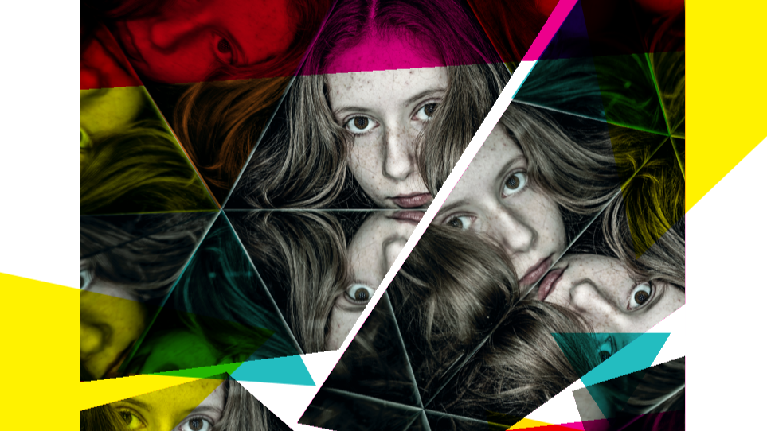

Kaleidoskop
»Wie gehen wir miteinander um?«

Ein Kaleidoskop hat unendlich viele Farben: Rote. Blaue. Gelbe. Grüne.
Warme. Grelle. Giftige. Beruhigende. Manchmal mischen sich die Farben. Ähnlich wie beim Umgang der Menschen untereinander.
Da gibt es Liebe, Freundlichkeit, Verständnis, Höflichkeit, Mitleid. Oder auch: Grobheit, Lügen, Hass, Polemik, Verfolgung, Gewalt.
Gemeinsam mit Schülerinnen und Schülern des Europa-Gymnasiums Frankfurt (Oder), der Musikschule und der Singakademie Frankfurt (Oder) sowie des Lyzeums am Collegium Polonicum in Słubice wollen wir die Themen in diesem Projekt auf der Basis der historischen Geschichte des Jesus von Nazareth untersuchen und diskutieren. Mit Hilfe der Musik von Johann Sebastian Bach aus seinen beiden berühmten Passionen: der Matthäus- und der Johannes-Passion. Dazu kommen Stücke des argentinischen Erfinders des Tango nuevo, Astor Piazzolla – beispielsweise aus seiner Oper »Maria de Buenos Aires«. Die musikalische Leitung übernimmt unser neuer GMD Felix Mildenberger.
Sind die zwischenmenschlichen Farben immer eindeutig? Mischen sie sich? Was kommt dabei heraus? Wie wirkt sich das zwischen uns aus? Wie kann man gut zusammenleben?
Alle diese Fragen wollen wir mit den deutschen und polnischen Schülerinnen und Schülern künstlerisch umsetzen: choreographisch, filmisch, sängerisch, schauspielerisch, zeichnerisch.
Was dabei herauskommt? Bunte Farben, hoffen wir. Wie bei einem Kaleidoskop. Und vielleicht auch – Einsichten.
Termine
- Sa · 10.10.2026 · 15:00 & 16:45 Uhr — Atrium Rathaus, Frankfurt (Oder)
- Mo · 12.10.2026 · 12:00 Uhr — Collegium Polonicum, Słubice
Mitwirkende
- Schülerinnen und Schüler aus Frankfurt (Oder) und Słubice
- Schülerinnen und Schüler der Musikschule Frankfurt (Oder)
- Knabenchor der Singakademie Frankfurt
- Felix Mildenberger, Dirigent
Die Themen. Die Musik.
Johann Sebastian Bach und Astor Piazzolla. Warum haben wir ausgerechnet Musik von diesen beiden scheinbar so gegensätzlichen Komponisten aus völlig verschiedenen Zeitaltern und Kulturkreisen ausgesucht? Warum glauben wir, dass ihre Musik besonders gut ausdrückt, was wir den Jugendlichen sagen wollen? Vielleicht, weil ihre Musik geradezu bildhaft prädestiniert ist, die von uns gewählten Themen auszudrücken. Vielleicht, weil Piazzolla sich schon früh nicht nur für Tango begeisterte, sondern noch früher für den großen Barock-Komponisten Bach.
Vielleicht aber auch ganz einfach, weil auf deren Musik der Satz von Martin Luther zutrifft:
„Musik ist ein reines Geschenk und eine Gabe Gottes, sie vertreibt den Teufel, sie macht die Leute fröhlich und man vergißt über sie alle Laster.“
Ganz einfach.
-
Klage / Trauer / Verzweiflung
- Johann Sebastian Bach: Matthäuspassion / Einleitung bis Einsatzchor
- Astor Piazzolla: Maria de Buenos Aires / Fuga y misterio
-
Hass / Mobbing / Hetze
- Johann Sebastian Bach: Johannespassion / „Wäre dieser nicht ein Übeltäter"
- Astor Piazzolla: Libertango
- Knabenchor: J. S. Bach, Johannespassion / Choral „Oh große Lieb, oh Lieb ohn alle Maßen"
-
Schmerz / Leid
- Johann Sebastian Bach: Matthäuspassion / Alt-Arie „Erbarme dich"
- Astor Piazzolla: Addio Nonino
-
Gleichgültigkeit
- Johann Sebastian Bach: Matthäuspassion / „Was gehet uns das an?"
- Astor Piazzolla: Oblivion
-
Mitgefühl / Liebe
- Knabenchor: J. S. Bach, Matthäuspassion / „Wer hat dich so geschlagen"
- Texte der Schülerinnen und Schüler
- Astor Piazzolla: Las cuatro estaciones porteñas / Invierno porteño
Eintritt frei – wir bitten vorab um Reservierung.
Mitmachen & Unterstützen
Als Mitglied des Fördervereins ermöglichen Sie Projekte wie Kaleidoskop – und dass Kinder und Jugendliche aus Frankfurt (Oder) und Słubice gemeinsam Musik, Theater und große Fragen auf die Bühne bringen.